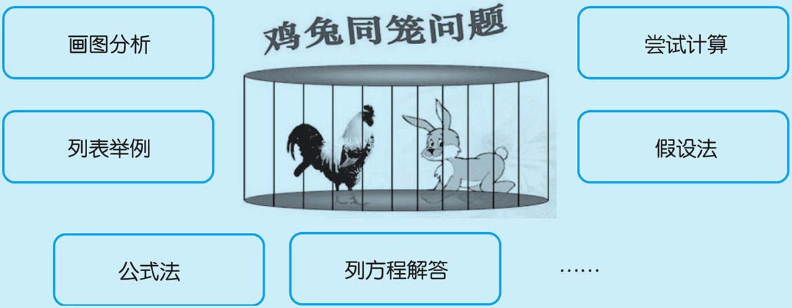
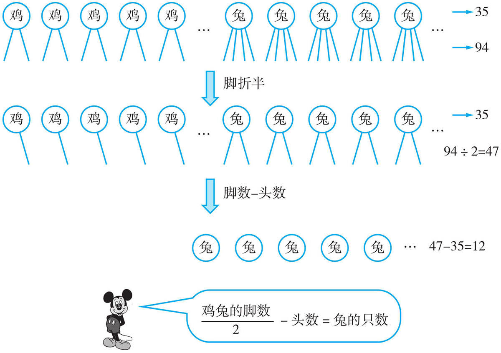
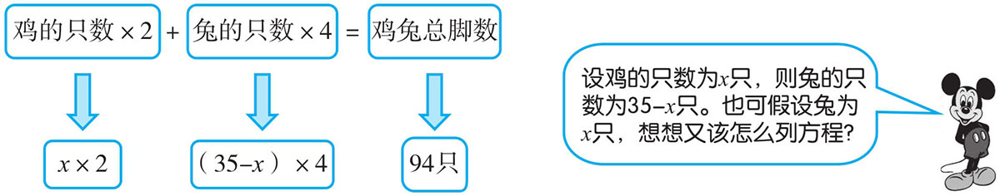
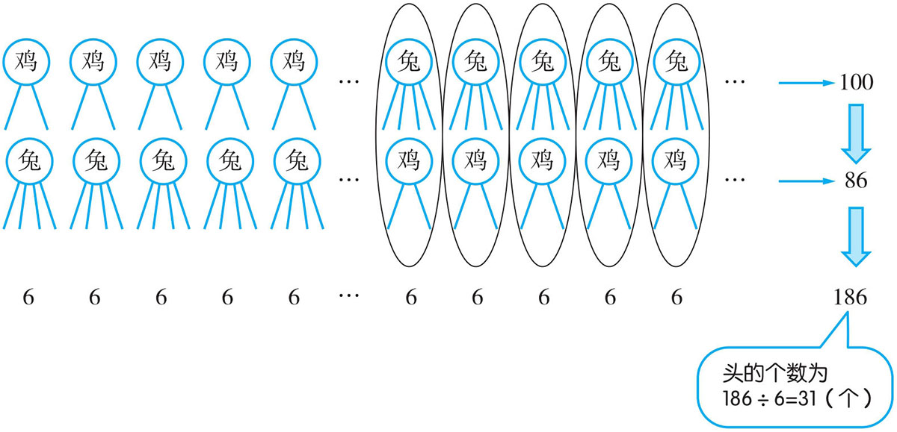
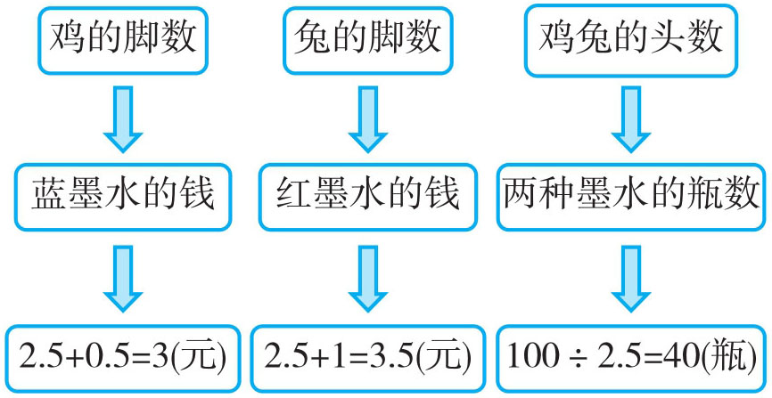
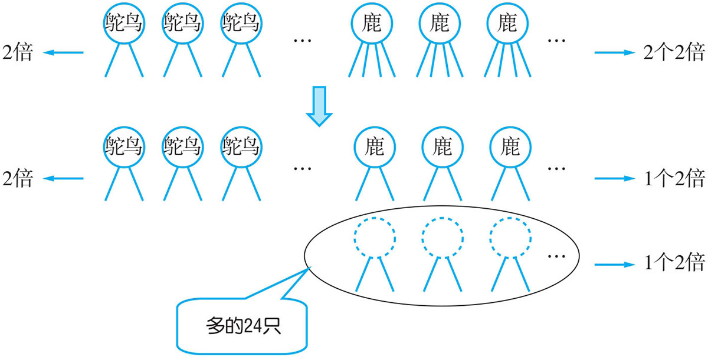
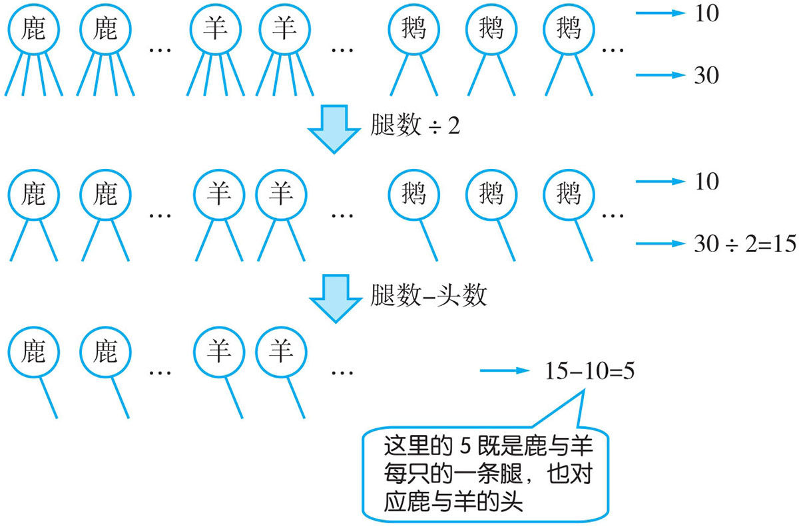
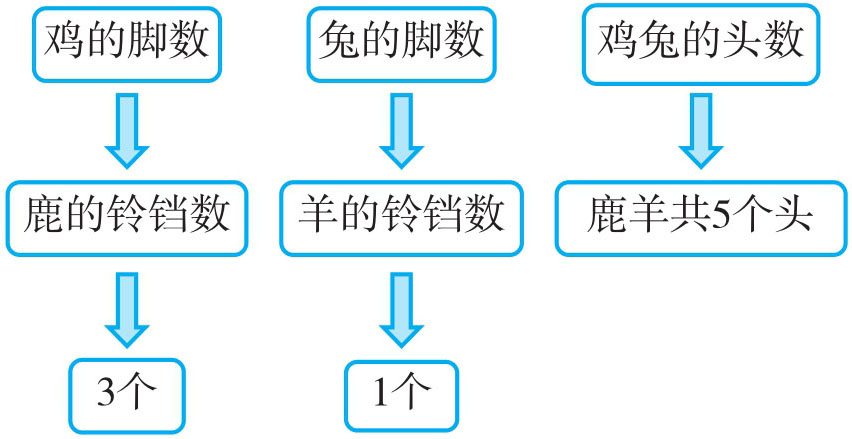

“鸡兔同笼”问题是有名的中国古算题，最早出现在《孙子算经》中，许多应用题都可以转化成这类问题。常用的解法有：

低年级学生一般用到画图分析与列表举例；中年级一般用尝试计算与假设法；高年级常用到假设法、公式法与列方程解答。
例1 今有鸡兔共居一笼，已知鸡头与兔头共35个，鸡脚与兔脚共94只，问：鸡、兔各几只？
这是一道典型的鸡兔同笼问题，在以前我们会用到列表法、尝试计算与假设法来解答，这里我们可以用到折半公式法与方程来解答。因兔脚数是鸡脚数的2倍，我们同时除以2（折半），这时鸡的脚与头对应，兔脚是兔的2倍，减去头数就是剩下的兔的只数。在用方程解答时，假设鸡为x 只，兔就为35-x 只，然后写出等式作答。
方法一：公式法。

方法二：列方程解答。

方法一：兔的只数：94÷2-35=12（只）
鸡的只数：35-12=23（只）
答：兔有12只，鸡有23只。
方法二：解：设鸡的只数为x 只，则兔的只数为（35-x ）只。
2x +(35-x )×4=94
2x +140-4x =94
46=2x
x =23
兔的只数：35-23=12（只）
答：鸡有23只，兔有12只。
例2 鸡、兔共有脚100只，若将鸡换成兔，兔换成鸡，则共有脚86只。问：先前鸡、兔各有几只？
通过“鸡换成兔，兔换成鸡”这个条件，可以推出先前的一只鸡与后换成的一只兔或者先前的一只兔与后换成的一只鸡，一个头对应的脚只数和为4+2=6（只）。两次脚的总只数为100+86=186（只），则头的总个数为186÷6=31（个），再根据假设法求出鸡与兔的只数。

头的个数：(100+86)÷6=31（个）
兔的只数：100÷2-31=19（只）
鸡的只数：31-19=12（只）
答：先前兔有19只，鸡有12只。
例3 蓝墨水和红墨水，以前都是2.5元一瓶，五（一）班上学期花100元买若干瓶。下学期每瓶蓝墨水涨价5角，每瓶红墨水涨价1元，虽然买的两种墨水瓶数还和上学期相等，但比上学期共多付28元。五（一）班下学期买两种墨水各多少瓶？
因上、下学期买的墨水瓶数相等，所以下学期买的瓶数也为100÷2.5=40（瓶）。下学期每瓶蓝墨水涨价5角，每瓶红墨水涨价1元，可推出，下学期每瓶蓝墨水3元，每瓶红墨水3.5元，下学期用的总钱数为100+28=128（元）。这实际也是一道鸡兔同笼的问题，头数即为瓶数，不同的价格即为不同的脚数，总钱数即为总脚数，可以按“鸡兔同笼”的解法作答。

总钱数为：100+28=128（元）
假设40瓶全部都为蓝墨水，与总钱数比则少128-40×3=8（元）
红墨水的瓶数：8÷(1-0.5)=16（瓶）
蓝墨水的瓶数：40-16=24（瓶）
答：五（一）班下学期买红墨水16瓶，蓝墨水24瓶。
例4 动物园养了一些梅花鹿和鸵鸟，腿的总数比头的总数的2倍多24只，梅花鹿有多少只？
每只鸵鸟2条腿，它是1个头的2倍；梅花鹿4条腿，它是1个头的4倍。4倍中就包含了2个2倍，也即是腿的总数是头的2倍还多24只，多的24只其实就是梅花鹿2个2倍中的一个，所以梅花鹿的只数就该为24÷2=12（只）。

梅花鹿：24÷2=12（只）
答：梅花鹿有12只。
例5 熊敏家养了三种动物，每只鹿戴着3个铃铛，每只小山羊戴着一个铃铛，大白鹅不戴铃铛。熊敏数了数，三种动物一共有10个脑袋、30条腿、11个铃铛。问：三种动物各有多少只？
三种动物，其中鹿与小山羊是4条腿，大白鹅是两条腿。用它们的总腿数除以2（折半），这时大白鹅的腿数与头数对应，鹿与小山羊的腿数是它们头数的2倍，再用腿数减去头数，就只剩下鹿与小山羊的头数。我们再根据鹿与小山羊的铃铛数，利用“鸡兔同笼问题”求解。

下面再根据“鸡兔同笼的问题”来解答

鹿羊的头数：30÷2-10=5（个）
羊的只数：(5×3-11)÷(3-1)=4÷2=2（只）
鹿的只数：5-2=3（只）
鹅的只数：10-2-3=5（只）
答：鹿有3只，羊有2只，鹅有5只。
1．在一次乒乓球联赛中，14张乒乓球台上共有40人在同时打球。问：进行单打和双打的台子各有几张？
2．某小学买大、小篮球共50个。已知大篮球每个60元，小篮球每个20元，共花了2120元。问：大、小篮球各买多少个？
3．龚斌的储钱罐里有面值5元和10元的人民币共63张，总钱数为525元，两种面值的人民币各多少张？
4．一次数学竞赛中，共有25道题，评分标准是：每做对一题得4分，每做错或不做一题倒扣2分。聂艳同学参加了这次竞赛，得了82分。问：聂艳同学做对了几道题？
5．每只鸵鸟有2条腿和2只眼睛，长颈鹿有4条腿和2只眼睛。光雾山动物园里有一群鸵鸟和长颈鹿。它们共有78只眼睛和124条腿，问：鸵鸟和长颈鹿各有多少只？
6．动物园里养了一些珍珠鸡与荷兰兔，共有脚76只，珍珠鸡比荷兰兔多14只，珍珠鸡与荷兰兔各有多少只？
7．鲁杉有面额2元与5元的人民币若干张，共134元；若她把2元换成5元，5元换成2元，这时共104元。问：先前她有2元与5元的人民币各多少张？
8．东榆小学派六年级同学抽查一年级小朋友古诗过关情况，一年级小朋友共180人。平均每个男生抽查5个小朋友，每个女生抽查3个小朋友；又知六年级女生比男生多4人，六年级派出男、女生各多少人？
9．有一辆货车运输4000个花盆，运费按到达时完好花盆数目计算，每个3角，如有破损，破损1个花盆还要倒赔10元，结果得到运费1097元。问：这次运输中花盆损坏了几个？